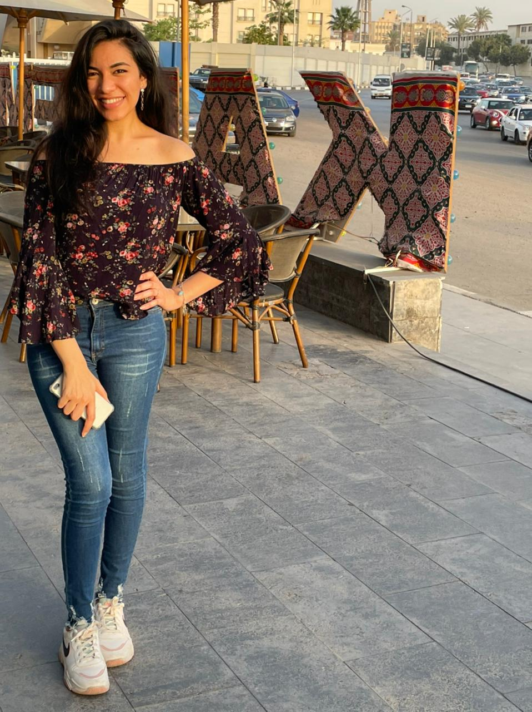
كل سنه وانتي طيبه يا حببتي
احلي عيد ميلاد واحلي يوم فالسنه
مش علشان عيد ميلادك لا ده علشان هنجيب تورته و حاجه ساقعه ,معلش مصلحه بطني اهم , كملي نزول 😘
نخش فالصور بقي
كل صوره ليها موقف او ذكرا
بس اكيد مش فاكرها 😁
بتتخرجي من المدرسه و كده فالف مبروك يعم😉
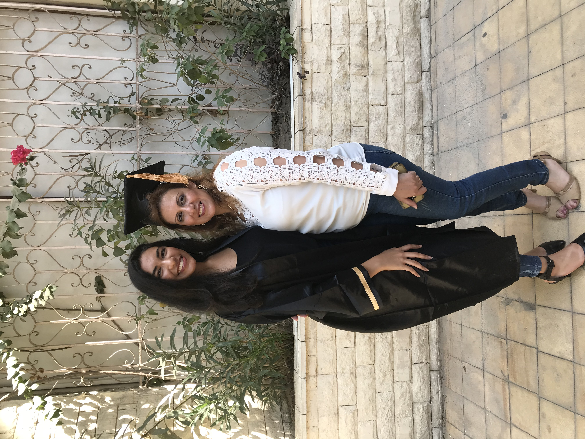
لا و كمان متصورين منغيري
عادي هتصور منغيركوا
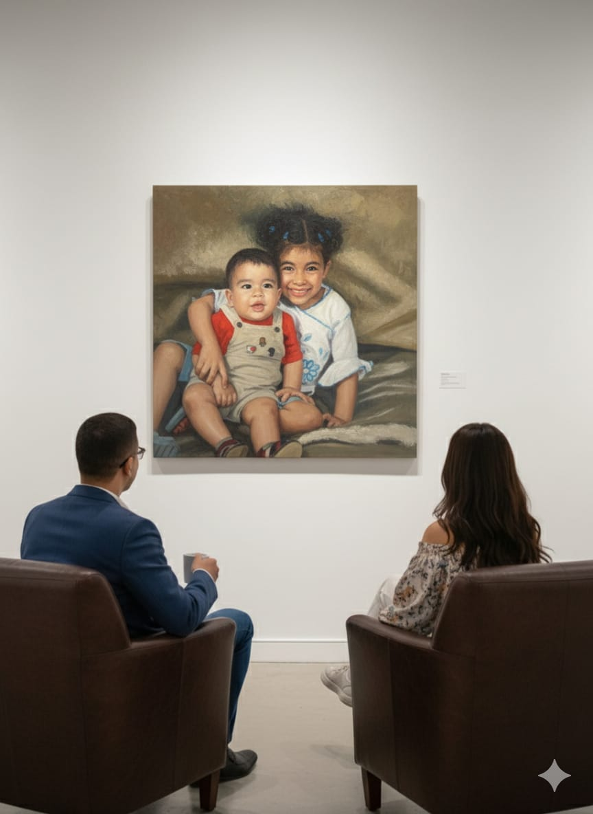
صوره بالذكاء الاسطباحي
😎كان معايه قهوه وانتي لا
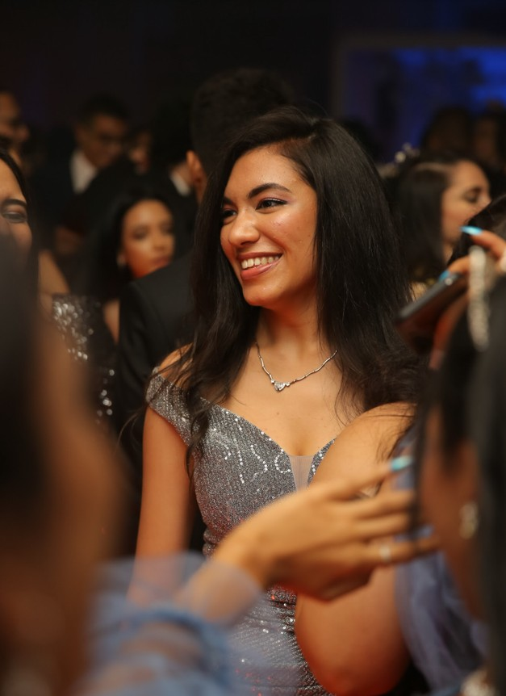
ايه ده ايه ده ايه ده
صوره ولا كان هيجي علي بالك انها معايه
هكر بقي و كده😉😎
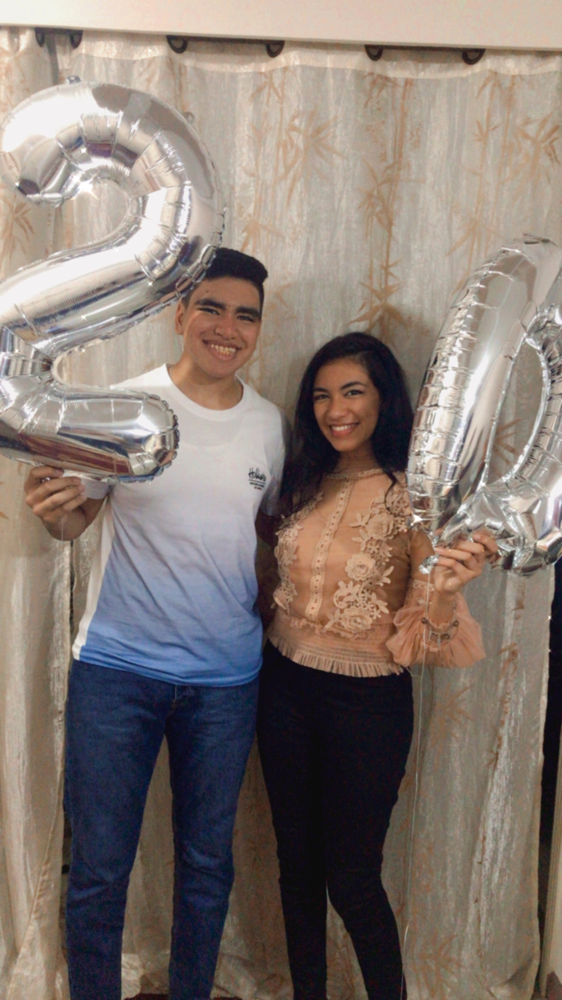
لو شطره تقولي مين فينا اللي تم ال20
اول سفريه لينا لوحدنا خالص
غالبا يعني😊😊
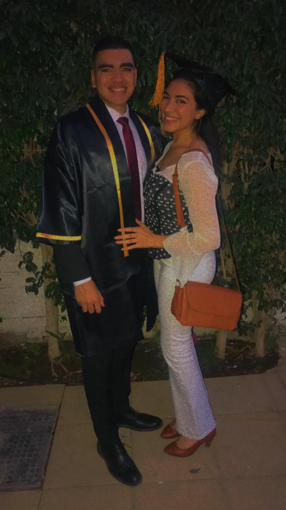
ياااه حافله تخرجي
امور انا وبردوا يسلام عريس😎
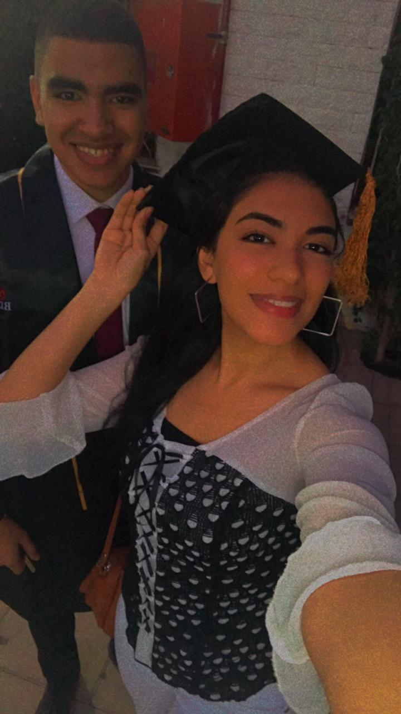
تاني تاني هو نفس اليوم هيهيهيهه
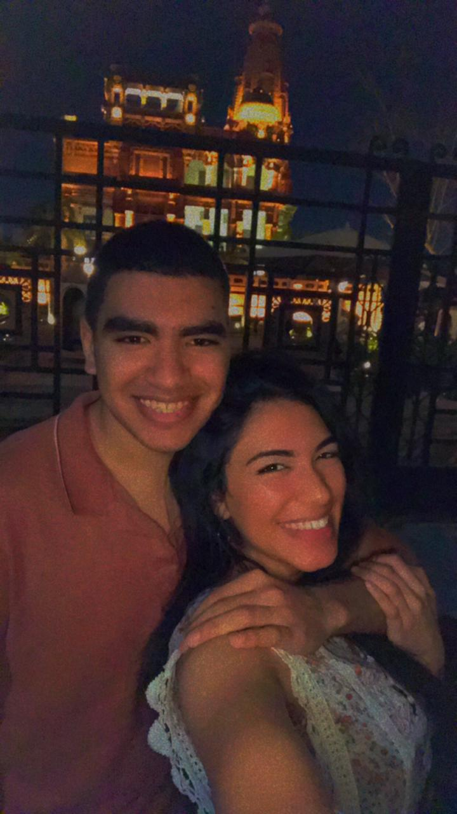
وقت الخنق
احلا ضحكه بشوفها بس معرف بتخبيها عني ليه😣
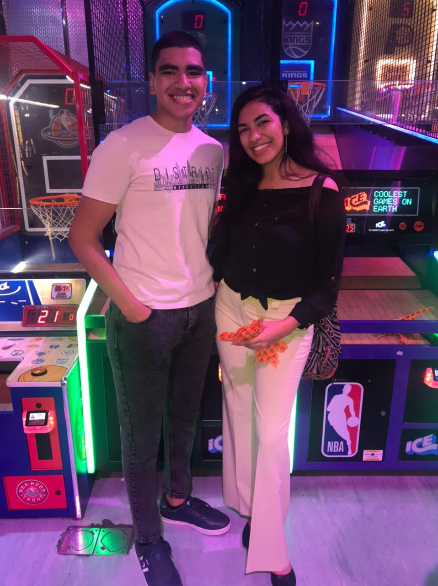
اللي مفسحاناااااااي
هو اللي ماكلنا هو
هو اللي مشربنا هو
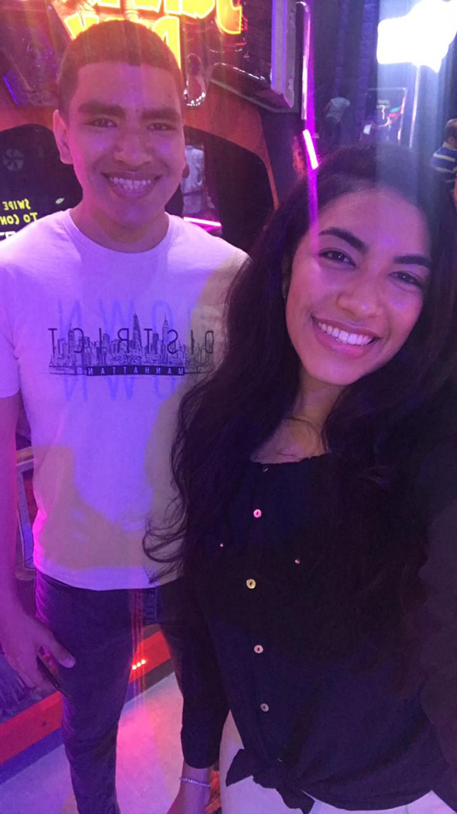
نفس الخروجه بس من ذاويه تانيه
بجد كان يوم حلو اوي مش هقول اكتر من كده لاني مفيش كلام يتقال بجد بحبك يا ستي خدي لايك👍
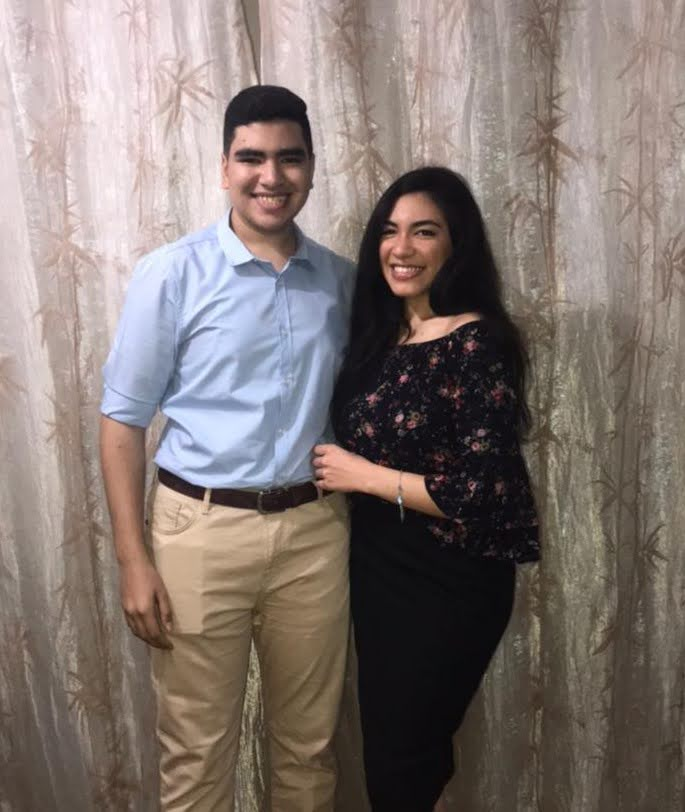
انا مش فاكر كان ايه المناسبه بس روحنا cinabon غالبا
تاني تاني حفله تخرجي هيهيهيه
و بس كده حبيت اعيد عليكي بشكل جديد
و انهي ببجد احلي كل سنه وانتي طيبه يا احلي و اجدع اخت فالدنيه اشطر خادمه ربنا معاكي فحياتك اللي جيه و انا كمان معاكي هيهيه و تبقي اهم واحده فالشغل بس ده كده كده اصلا هما نالوا شرف وجودك معاهم و بس كفايه عليكي كده بقي انا كنت مشتها رساله واتساب و خلاص يعني مش فاهم انا.